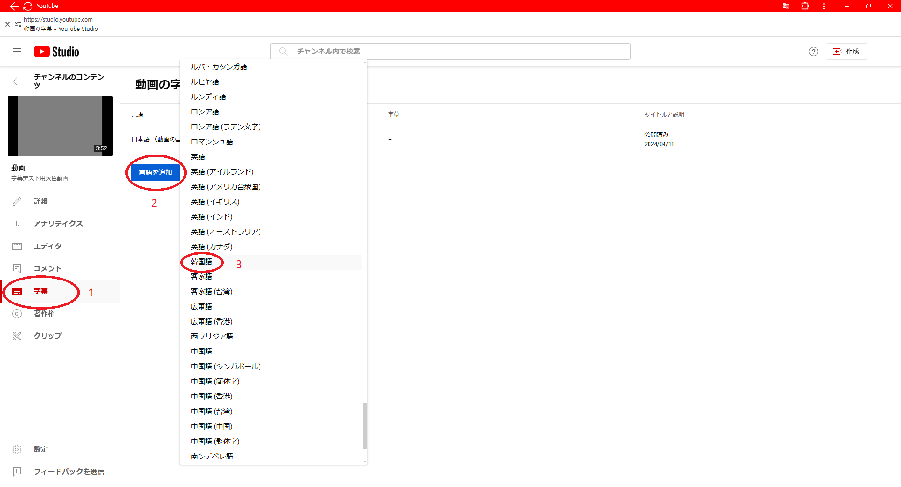
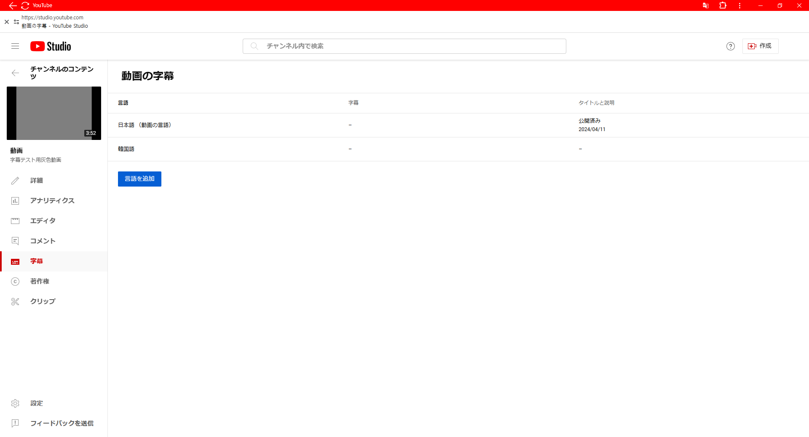
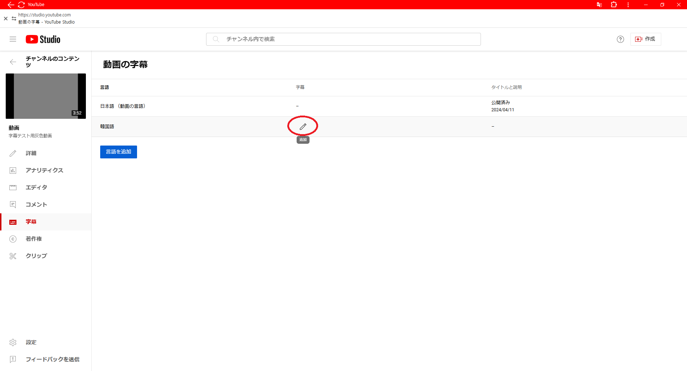
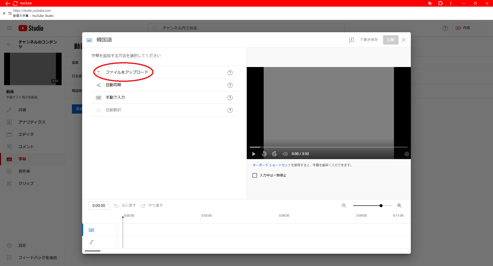
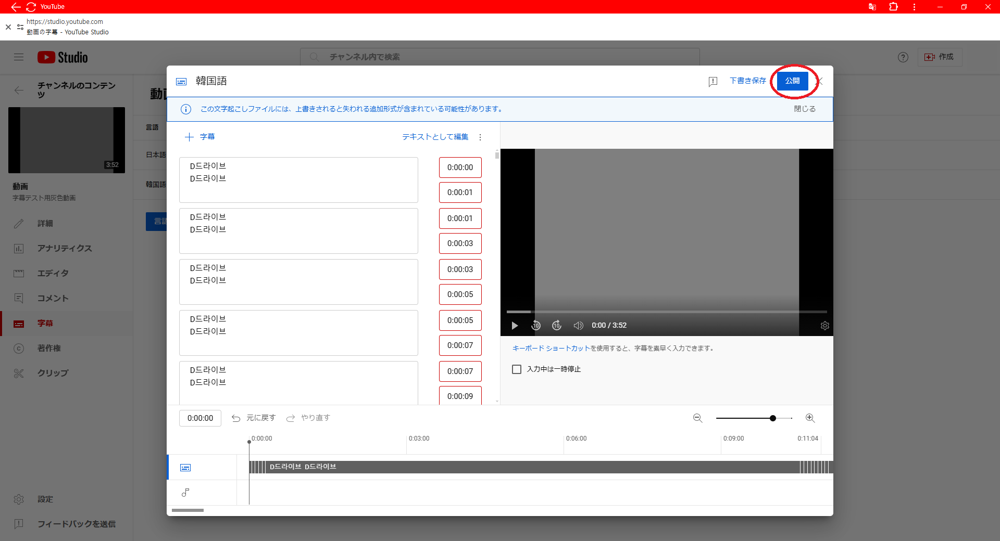
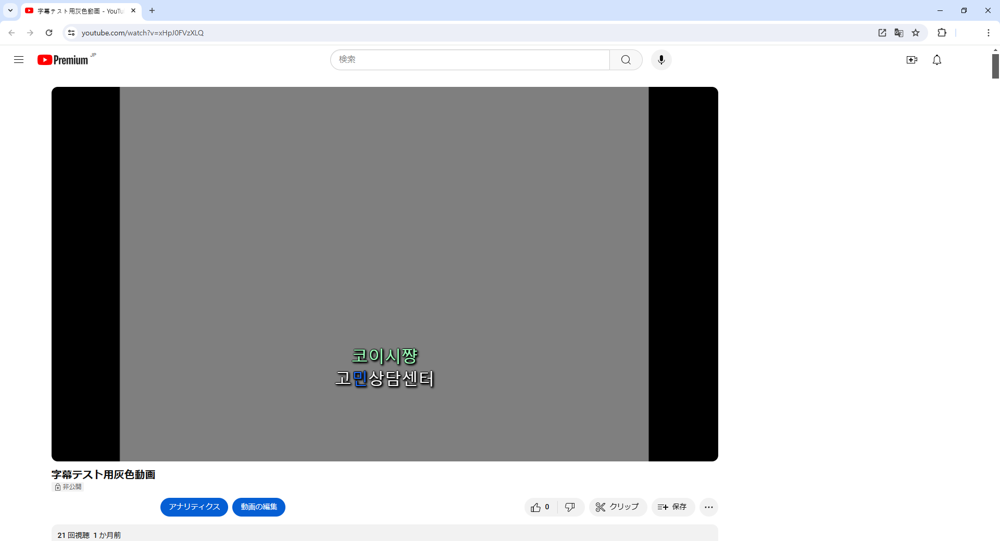
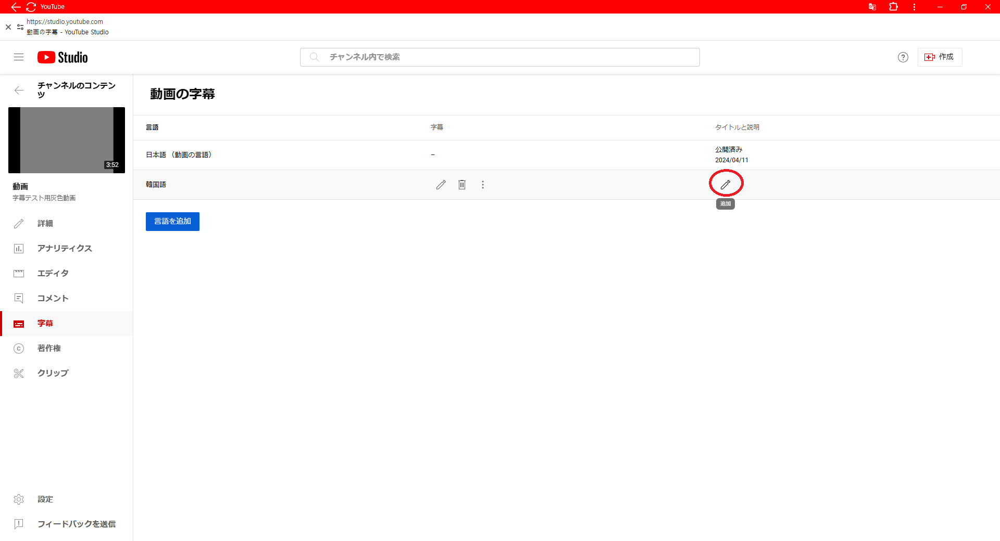
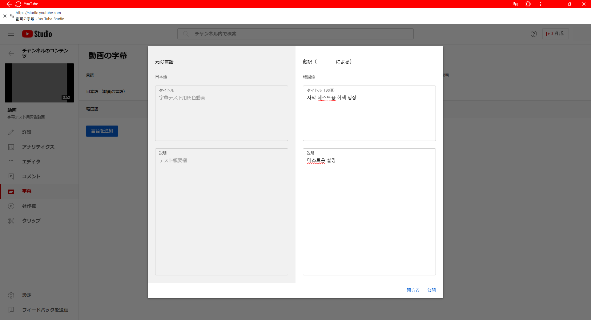
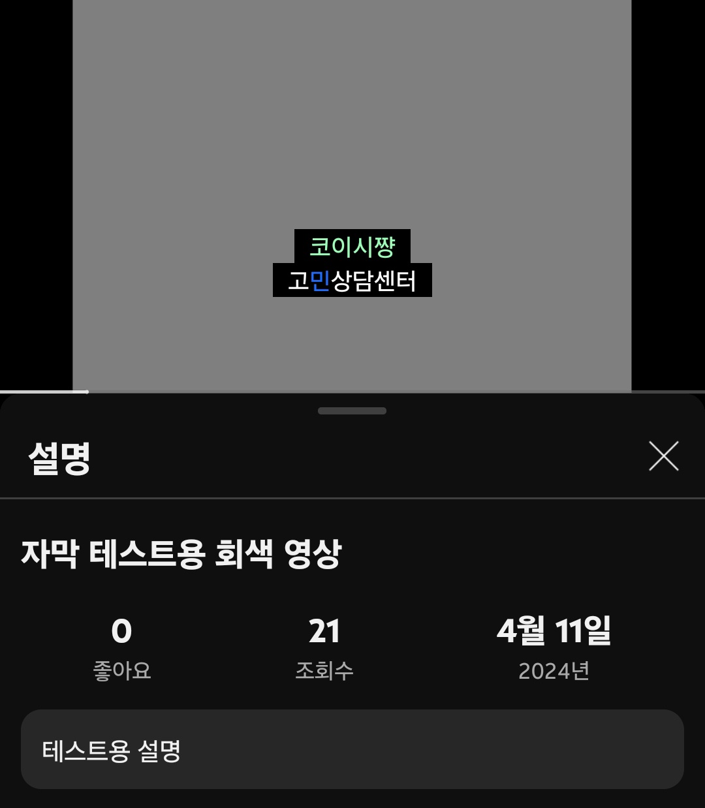

字幕の正しい適用方を説明すると思います。
まずは字幕画面に行く方法です。

こうやって韓国語字幕を追加するのは大体やれると思います。

追加できたらこういう画面になります。

次はこれを押します。

これを押します。
ここからが本番です。

アップした後にはなんかエラーが出たり、同じ内容があったりしますが、無視してこれを押してください。
字幕の書式とか位置とかのせいでこうなるんです。
なんか触ったりしたら字幕が破られるので、注意してください。

成功したら、こうやって色が付けていたりとか、位置が調整できたとかします。
次はタイトルと概要欄の適用方です。

これを押して、

こうして適用します。

適用成功しました。ようつべの言語が韓国語の携帯では韓国語にでます。もちろん、日本語に設定したパソコンでは日本語によくでます。
ここまで字幕の正しい適用方を説明しました。
ありがとうございました！